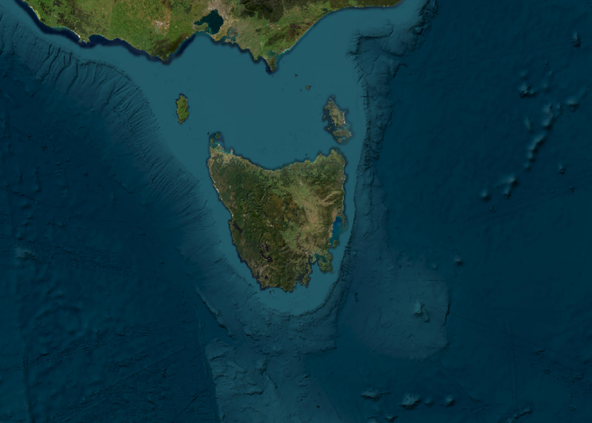

#' Plot raster at native resolution
#'
#' Determines the current device size and plots the raster centred on its own
#' middle to plot at native resolution.
#'
#' @param x as SpatRaster
#' @param ... passed to terra::plot
#'
#' @return the input raster, cropped corresponding to the plot made
#' @export
#'
#' @examples
#' plot_native(terra::rast(volcano))
#' plot_native(terra::disagg(terra::rast(volcano), 64))
plot_native <- function(x, ...) {
ex <- as.vector(terra::ext(x))
at <- NULL
## take the centre
if (is.null(at)) {
at <- apply(matrix(ex, 2), 2, mean)
}
dv <- dev.size("px")
scl <- terra::res(x)
halfx <- dv[1]/2 * scl[1]
halfy <- dv[2]/2 * scl[2]
cropex <- c(at[1] - halfx, at[1] + halfx, at[2] - halfy, at[2] + halfy)
x <- terra::crop(x, terra::ext(cropex), extend = TRUE)
add <- FALSE
if (terra::nlyr(x) >= 3) terra::plotRGB(x, add = add) else plot(x, ..., add = add)
x
}Plot native, something I should have done long ago.
So as an example read this world imagery.
dsn <- "<GDAL_WMS><Service name=\"TMS\"><ServerUrl>http://services.arcgisonline.com/ArcGIS/rest/services/World_Imagery/MapServer/tile/${z}/${y}/${x}</ServerUrl></Service><DataWindow><UpperLeftX>-20037508.34</UpperLeftX><UpperLeftY>20037508.34</UpperLeftY><LowerRightX>20037508.34</LowerRightX><LowerRightY>-20037508.34</LowerRightY><TileLevel>17</TileLevel><TileCountX>1</TileCountX><TileCountY>1</TileCountY><YOrigin>top</YOrigin></DataWindow><Projection>EPSG:900913</Projection><BlockSizeX>256</BlockSizeX><BlockSizeY>256</BlockSizeY><BandsCount>3</BandsCount><MaxConnections>10</MaxConnections><Cache /><ZeroBlockHttpCodes>204,404,403</ZeroBlockHttpCodes></GDAL_WMS>"
library(terra)terra 1.7.83im <- project(rast(dsn), rast(ext(-1, 1, -1, 1) * 1e6, res = 1000, crs = "+proj=laea +lon_0=147 +lat_0=-42"), by_util = TRUE)
plotRGB(im)
Do we have more, or less resolution than our device can handle? This next plot shows that we have more, and the cropped raster is returned to match the device.
print(dim(im))[1] 2000 2000 3print(dev.size("px"))[1] 1344 960plot_native(im)
class : SpatRaster
dimensions : 960, 1344, 3 (nrow, ncol, nlyr)
resolution : 1000, 1000 (x, y)
extent : -672000, 672000, -480000, 480000 (xmin, xmax, ymin, ymax)
coord. ref. : +proj=laea +lat_0=-42 +lon_0=147 +x_0=0 +y_0=0 +datum=WGS84 +units=m +no_defs
source(s) : memory
colors RGB : 1, 2, 3
names : GDAL_WMS>_1, GDAL_WMS>_2, GDAL_WMS>_3
min values : 0, 0, 0
max values : 255, 237, 213